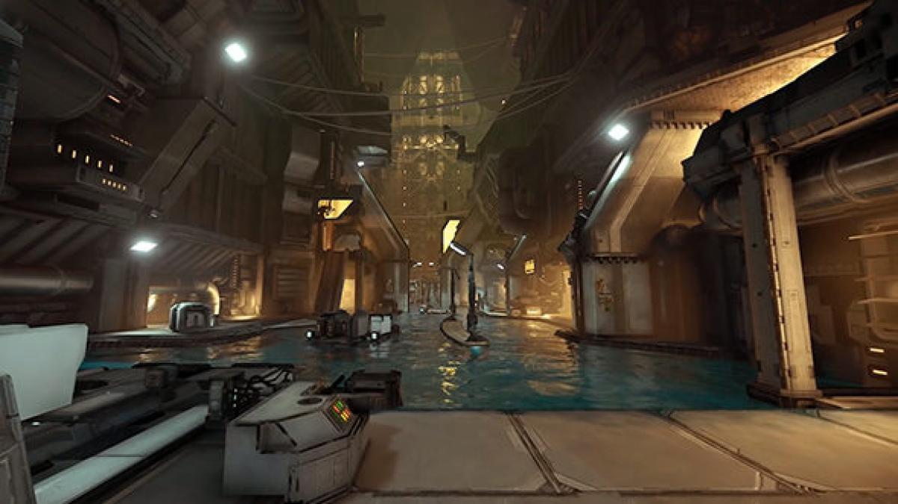
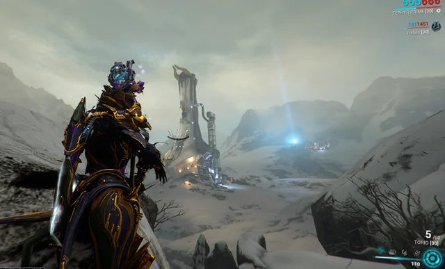
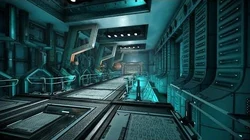

A temperteure controlled planet under Corpus control. Venus is one of many planets under the gredy corpo cult's control. What makes venus different is Fortuna. This underground city sits in the center of Orb Valis.
Fortuna is a city full of rebel corpus debt slaves that have been forfully modified as cyborgs.
Orb Valis is a snowy plain where the corpus have there mining operations and other bases.


